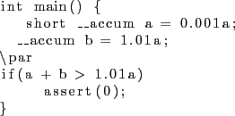

Next: About this document ... Up: Model checking of multicore Previous: Examples of new data Contents Index
Consider a faulty implementation of open door where the door may not be opened even though the preconditions are met.

The CBMC verifies for the postcondtion and suggests the possible states which can lead to failure.